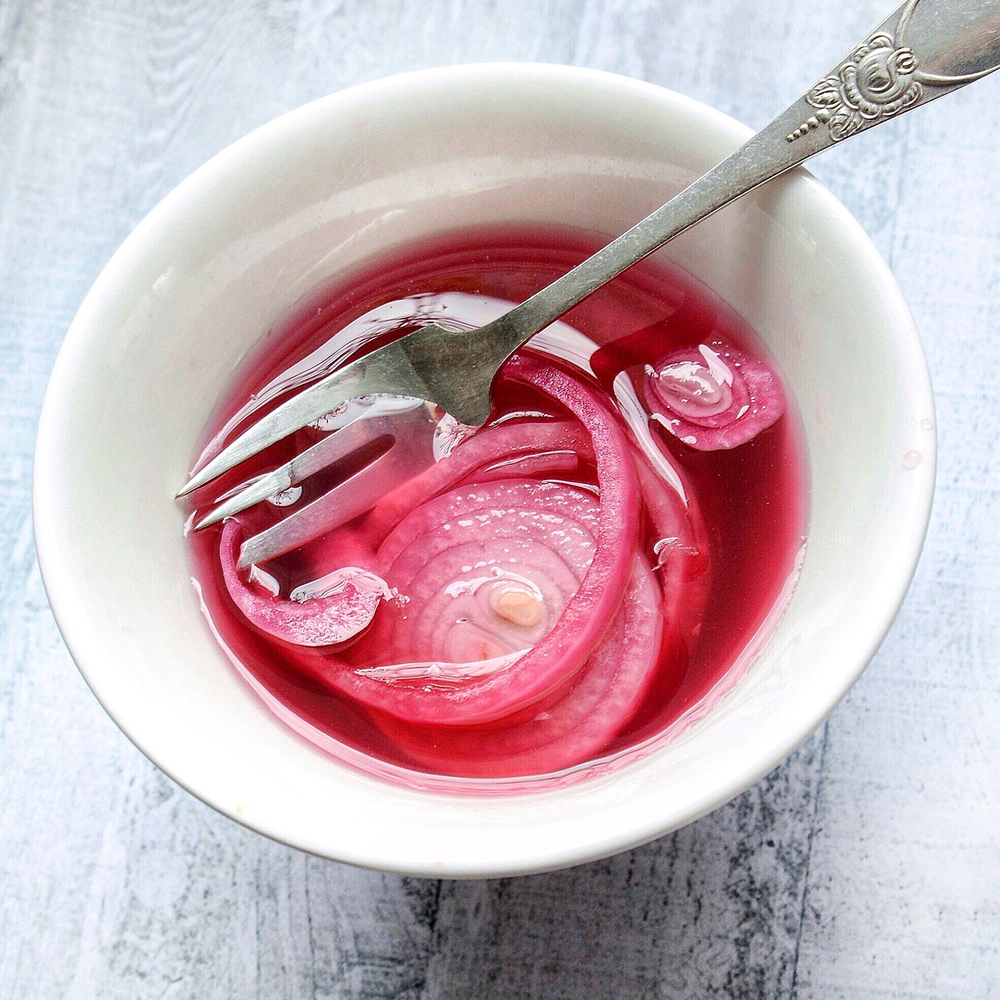

Pickled Red Onion Recipe

Tangy and flavorful topping for salads, sandwiches, and beyond
These little guys add bite both in their flavor and texture.
Simple to prep, these can last over 2 weeks in your fridge and only get tastier over time
Ingredients
I'll be using 2 onions for this recipe, but you can easily scale the ratios here to accomodate for more or less.
- 2 large red onions
- 2 cups white vinegar
- 2 cups water
- 1/3 cup sugar
- 1 Tbsp salt
Optional Ingredients
Each spice or seasoning here infuses itself into the onion, and can have quite the impact.
These are a few ideas, but experimentation with your favorite flavors may bring a pleasant surprise!
I'd use a maximum of 1 tablespoon per onion to avoid them becoming too overbearing, even less depending on the power of your spice.
- Minced Garlic
- Peppercorns
- Red Pepper Flakes
- Ginger
Directions
- Slice your red onions into slightly narrow strips.
- Ensure each layer of onion is separated from eachother. This is easiest to do by hand, and doesn't have to be done very carefully.
- In a large container with a lid, add your vinegar, water, sugar, salt, and any additional spices, and stir until the sugar has dissolved
- Add your onions to the mixture, ensuring that they are submerged.
- Cover the container with a lid, and refrigerate for a minimum of 15 minutes.
They will continue to become more flavorful over each passing day, but may begin to lose rigidity after about a week.
Serving
This serves as a wonderful topping on a salad or sandwich, or on top of savory dips like Buffalo Chicken Dip.
It can be used in a pinch as a palette cleansing side for chicken or fish.
Return Home